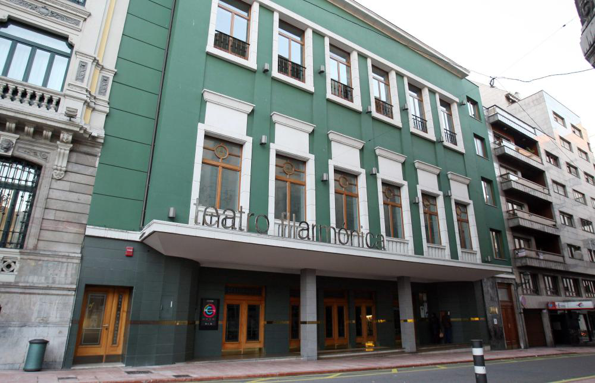
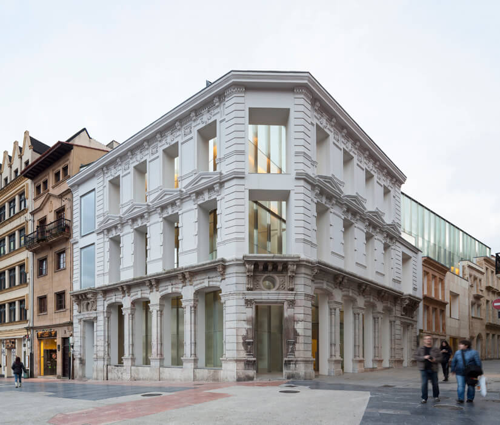
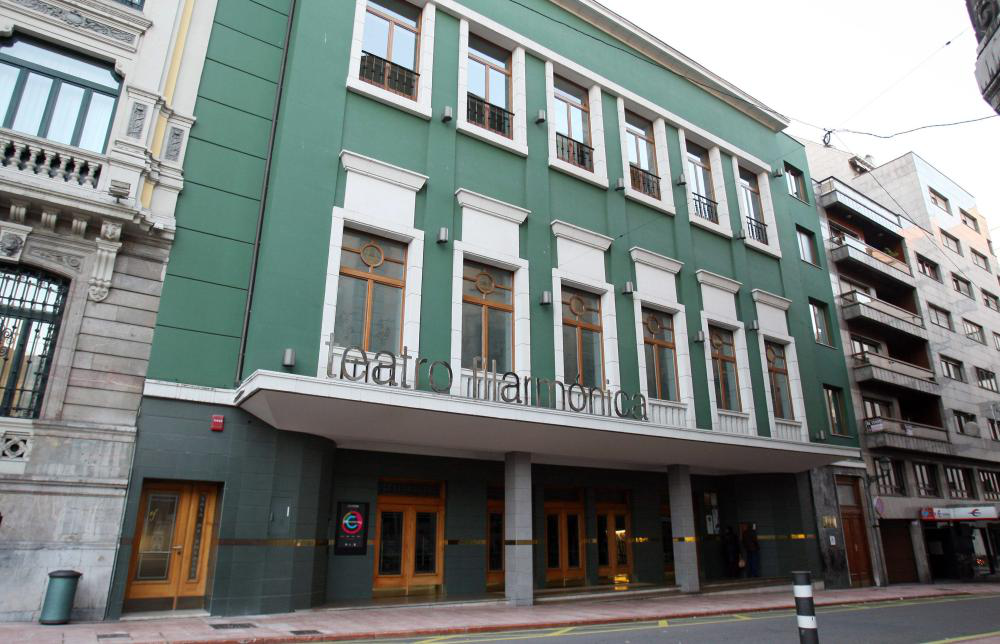
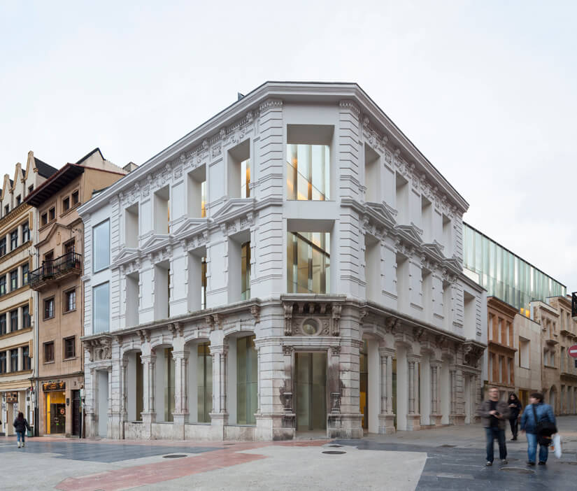

Music: a bagpipe tradition
The most traditional and well-known musical instrument in Asturias is the Asturian bagpipe (Gaita asturiana). It is a wind instrument with three pipes, constructed in a wide array of keys and types, anywhere from A to as high as E flat.
The traditional bagpiper, gaitero asturiano, will play the instrument wearing the Asturias' traditional suits, and it is often played in bands, along with drums, accordions and at least one bass drum.
Here in Oviedo, we have the biggest bagpipe band of the whole region, called the Real Banda de Gaitas Ciudad de Oviedo.
Oviedo's Royal Bagpipes Band
The Royal Band of Bagpipes "City of Oviedo" was founded back in 1992 by Adolfo García Blanco, who is still now the president. There has been several directors since, but the most recent active ones are Vicente Prado Suárez "El Praviano", José Manuel Fernández Gutiérrez "Guti", and the recently deceased at an early age Yolanda Pérez Alonso "Yoly", who was much loved by all the members and will always be remembered. The band is currently formed by more than 60 musicians, most of them bagpipers.
As the official municipal band, they mainly offer shows in Oviedo and performances outside of this city have been relegated to the background, although it's a tradition to play every year on some well known events such as the International Sella River Descent, or travel all around the world to play in countries like China, Portugal, or two years ago in the Dominican Republic. We must not forget that, in addition to the dissemination of traditional Asturian music, one of its main objectives is to actively participate in the life and events of the city and the Council of Oviedo.
There are many requests for the presence of the Band. Of all of them, approximately 130 performances are carried out per year (and increasing), with the main destinations being the towns and neighbourhoods of the Council. It is also worth highlighting its participation in the most important events in Oviedo: it has had great success in the Three Kings Parade (Cabalgata de Sus Majestades los Reyes Magos), the America Day in Asturias' parade, and its performance at the Princess of Asturias Awards Ceremony, which left almost half the world breathless. This last one is the most important event every year, when all the Spanish people over the country can hear them playing both the Spanish and Asturian anthems in front of the kings and the princess, among the traditional song "Pasucáis de El Xarreru while they exit the theater.
The large number of performances accumulated by the group led to the birth of the "Vetusta" Bagpipe Band in 1999, with the peculiarity that all its members are under eighteen years of age, and which is a sub-group of the band that has some performances of their own, but can play too with the whole band.
Regarding the musical repertoire, they play mainly asturian traditional songs, as well as some songs composed by the directors of the band (Pasucáis Pixueto by Guti), and some mixes of both traditional or not-so traditional songs (Beatles mix, with some of their most popular songs adapted to the bagpipe). But when Christmas comes, people will always be able to enjoy some good carols to the sound of the bagpipe.
Food: not only fabada and cachopo
In Oviedo, as the capital of Asturias, we follow the traditions of the most tipycaldishes of the region, the best known being fabada (Asturian bean stew) and cachopo (two big veal fillets with some content, normally ham and some kind of cheese, all breaded). Nevertheless, we have ourselves some special meals and desserts.
"El Desarme"'s menu
This is a commemoration that began at the end of the 19th century and continues to this day. Every October 19th, the capital commemorates the triumph of the Isabelline troops over the Carlists. The succulent and hearty Desarme menu is, as the legend says happened to the enemy soldiers, made to leave diners without strength. Chickpeas with cod and spinach, tripe and rice pudding as a typical dessert to top it off are the dishes that make up the menu and that you will find in many restaurants in the city. There is even a association that is responsible for ensuring that this custom that combines history and gastronomy is maintained.
Asturian cider: something to wash down the meal

In Asturias, the most common alcoholic beberage is not the beer, nor wine. It is the Asturian apple cider (Sidra asturiana) what almost everybody enjoys. With a low alcoholic content, and it's fresh apple flavor, it's perfect for every ocasion, and in Oviedo you can find it almost everywhere. The best place for having a bottle, is the Gascona boulevar, a street full of a special kind of bar called "sidrería" with an always lively atmosphere, and sometimes traditional music.
The sweetest part of Oviedo: our desserts
And to finish the "menu" with something sweet, we must talk about our most typical desserts, starting with the jewel of the crown: the "carbayones". This dessert take its name from the people of Oviedo, since "carbayones" is what people of Oviedo are colloquially called, for a certain oak tree (carbayo) that was located in the main street. The sweet was created in the first third of the 20th century . Between 1920 and 1923, José de Blas, owner of the Camilo de Blas confectionery, commissioned his master baker, José Gutiérrez, to make a sweet that would represent the city of Oviedo. This sweet, the carbayón, would be unveiled at the first International Trade Fair of Asturias that took place in Gijón in 1924.
The other well known dessert in Oviedo are the moscovitas: delicious cookies made from Marcona almonds and milk chocolate. They are crafted using traditional methods, featuring almond paste covered in chocolate.
These, among tons of other traditional desserts, can be found in a large number of bakeries and pastry shops around the city. Maybe the most important ones are "Rialto", famous for their moscovitas, and "Confitería Asturias", with its famous "Letizia" cakes and its well-known mille-feuille tarts.
Art: a little bit of every ambit
In Oviedo we have no shortage of art: from the Campoamor theatre to the Museum of Fine Arts, you'll discover something new on almost every square, so look out for sculptures everywhere!
Theatres, opera and art museum
Oviedo is the home of several theatres and music houses, being the most famous the next:
- Teatro Campoamor - The Campoamor theatre was born in Oviedo as a response to the need for a framework for staging operas and theatre performances due to the emerging economic bourgeoisie that was beginning to emerge in the capital. Until then, performances were held at the Fontán theatre , next to the square of the same name and which is now the Ramón Pérez de Ayala Library of Asturias. Today, after having undergone various works of technical modernisation over the last two decades, the theatre is still fully operational, and among the many events held there are the Oviedo opera season, the now defunct Teatro Campoamor Lyric Awards and the Princess of Asturias Awards ceremony.
- Teatro Filarmónica - The second-most visited theater of Oviedo, the building has a rationalist façade with several rows of balconies and windows and an exterior awning. The staircase leads to an elegant hall. The building has a basement containing the storage rooms, while the dressing rooms, the stage, the make-up room, the seating area and the entrance are located on the basement floor. The audience room has a stalls area and a floor for boxes and a general area. The stage is small, so from the beginning the theatre faced the problem of not being able to stage plays with large orchestras or sets, having the nearby Campoamor Theatre available for these productions. The theatre has a capacity of 800 seats.
- Fine Arts Museum - The Asturias Fine Arts Museum (Museo de las Bellas Artes de Asturias) is located just on the Cathedral square, in the old town, one of the better places to put a museum, as one could say that the own square is art. The museum opened its doors in 1980, and today it has one of the best art collections in Spain, comprising over 15.000 pieces from the 14th and the 21st centuries, with works by El Greco, Goya, Sorolla, Picasso, Dalí and Miró. It is an open collection, which increases every year thanks to acquisitions, donations, deposits and other formulas such as endowments, with the deposits from the Prado and Reina Sofía museums, as well as the endowment of the Pedro Masaveu Collection, standing out within the latter two modalities.
 


